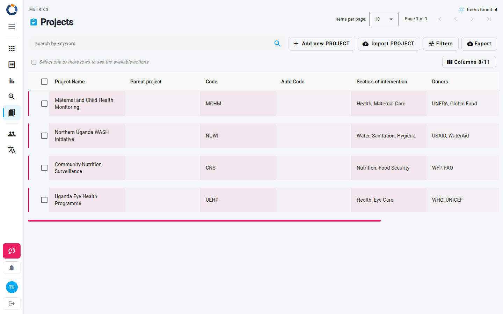

Projetos
A página Projetos no Dino permite gerenciar todos os valores da métrica Projeto. Isso pode ser usado para mapear os projetos da sua organização, um programa, colaborações com doadores ou qualquer outro grupo estruturado de atividades relevante para o seu trabalho. Você pode ver uma lista ordenável de projetos, adicionar novos, editar os existentes, deletá-los, importar dados em massa e exportar a lista para análise offline. A página também oferece ferramentas de filtro para encontrar rapidamente o projeto que você precisa.

Navegando até Projetos
Para abrir a página Projetos, clique em Métricas na navegação principal e, em seguida, no cartão Projetos. A URL do navegador terminará com /metrics/projects.
Entendendo a lista de projetos
A tabela principal mostra uma lista de todos os projetos. Cada linha corresponde a um projeto e exibe as seguintes colunas por padrão:
- Project Name – O nome do projeto. Você pode ordenar a lista por esta coluna.
- Projeto principal – O projeto de nível superior ao qual este projeto pertence, se houver.
- Código – Um código de projeto atribuído manualmente.
- Auto Code – Um código gerado automaticamente. O Dino o define: ele não é mostrado no diálogo do projeto e não pode ser editado.
- Setores de Intervenção – Os setores nos quais o projeto se concentra.
- Doadores – As fontes de financiamento do projeto.
- Data de início – A data em que o projeto começa.
- Data final – A data em que o projeto termina.
As colunas ocultas (ID, Creation Date e Additional Attributes) podem ser exibidas com o botão Colunas (dica Personalize as colunas), acima da tabela, à direita.
Read-only fields
O campo Auto Code é gerado automaticamente e não pode ser alterado. Ele é mostrado na lista, mas não no diálogo do projeto.
A barra de ferramentas superior exibe o número total de itens encontrados e um paginador. Você pode escolher quantos projetos visualizar por página.
Gerenciando projetos
Adicionando um novo projeto
- Clique no botão Add new PROJECT na barra de ferramentas acima da tabela.
- Um diálogo é aberto onde você preenche os detalhes do projeto. Os campos opcionais estão marcados como (optional).
- Pressione Salvar para criar o projeto. Ele aparece na lista imediatamente.
Editando um projeto
- Passe o mouse sobre a linha do projeto e clique no ícone Editar (lápis), ou selecione a linha e clique em Editar na barra de ações acima da tabela.
- Modifique os campos no diálogo.
- Clique em Salvar para aplicar suas alterações.
Ver um projeto
- Passe o mouse sobre a linha do projeto e clique no ícone Ver (olho), ou selecione a linha e clique em Ver na barra de ações, para abrir uma versão somente leitura do diálogo de detalhes do projeto.
Deletando um projeto
- Clique na linha do projeto para selecioná-la e, em seguida, clique em Deletar na barra de ações acima da tabela.
- Confirme a exclusão na janela pop-up. O projeto é removido permanentemente.
Deleting a project
Deletar um projeto o remove do sistema. Esta ação não pode ser desfeita. Um projeto que é usado por forms, ou que tem projetos filhos, não pode ser deletado; consulte Métricas.
Pesquisa e filtro
A barra de pesquisa e filtros fica abaixo do título da página. Você pode:
- pesquisa por palavra-chave – Digite qualquer termo no campo de palavra-chave; a lista é filtrada automaticamente.
- Filtrar por intervalo de datas – Clique em Filtros, defina uma Data inicial e uma Até à data e, em seguida, clique em Pesquisar. As datas filtram pela data de criação do projeto, não pela sua data de início ou término.
Os chips de filtro aparecem abaixo da barra de filtros, mostrando os filtros ativos. Você pode remover chips individuais clicando no ícone cancelar em cada um.
Exportando e importando
Exportando projetos
- Clique no botão Exportar na barra de ferramentas.
- Escolha o que exportar: Itens na página (o padrão), os itens que correspondem aos seus filtros ou Todos os itens.
- Escolha o formato: csv, xlsx ou splitted xlsx e, em seguida, clique em Exportar.
Importando projetos
- Clique no botão Import PROJECT na barra de ferramentas acima da tabela.
- Faça upload de um arquivo
.xls,.xlsxou.csve mapeie suas colunas para os campos do projeto. - Clique em Aplicar importação e revise o resultado em busca de erros ou avisos. Projetos cujo nome já existe são reutilizados, não atualizados.
Ações em massa
Você pode selecionar vários projetos usando as caixas de seleção à esquerda de cada linha. Com vários projetos selecionados, a barra de ações acima da tabela oferece Deletar, que remove todos os projetos selecionados após confirmação. Não há edição em massa.
Após a exclusão, a lista é atualizada automaticamente.